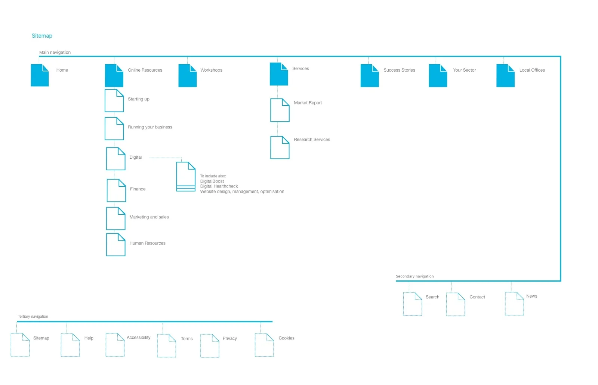
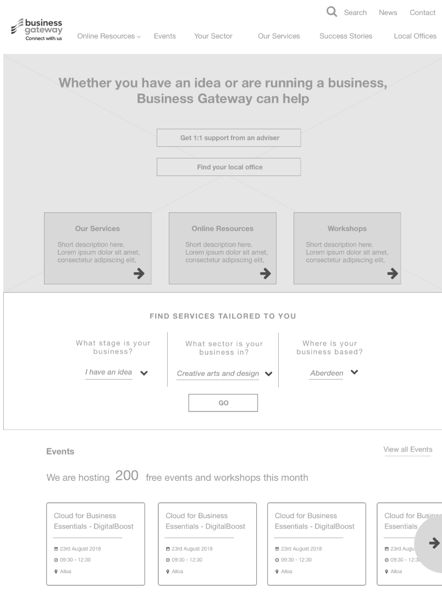
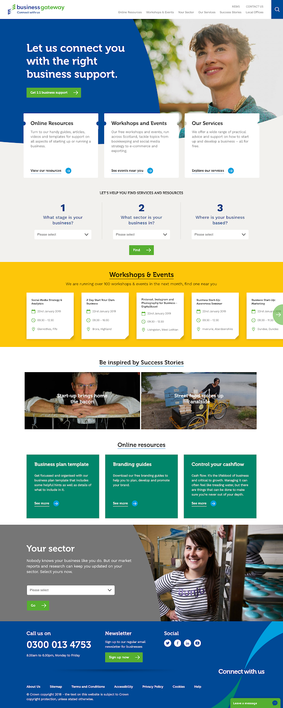

Business Gateway — a website rebuilt around business stage
A full redevelopment of Scotland's business support service: growing credibility with established growth businesses while keeping the service strong for startups, and making it usable for people who have very little time.
Background
The previous site had performed well for years, but requirements had outgrown it. New content had been added area by area, each addition reasonable on its own, none of them adding up to a structure. What the experience needed was not more content but structural change.
The brief had a tension in it: grow understanding and credibility among established growth businesses, without weakening a service that startups already relied on. Two audiences with different needs, different vocabulary, and very different amounts of time to spend looking.
Research and information architecture
We ran detailed UX research, reworked the content around actionable guides rather than descriptions of services, and segmented the audience by business stage — the one distinction that actually predicted what someone needed.
- A new information architecture separating Starting a Business from Running a Business.
- A Success Stories gateway, and a Your Sector area for industry-specific content.
- Local office pages brought into the main site rather than living apart from it.

Lean delivery
Delivery ran agile and lean: two UX sprints, two design sprints and four development sprints, with co-creation workshops bringing the client into the decisions rather than presenting to them afterwards.


The tailored tool
The centrepiece was a personalised tool filtering content by stage, geography and sector. Rather than asking a time-poor business owner to navigate an organisational structure, it asked three questions they could answer immediately and returned only what applied to them.
Results
The site reached a WAI ‘A’ accessibility rating. A second phase followed, adding search, the DigitalBoost programme and events.
I've been working with Whitespace on a wide range of projects for over 7 years. Their work and final products for DigitalBoost have always been incredibly useful and engaging. They feel like part of the team and not just an agency.
Jacqui MacDougall — Marketing Manager, Business Gateway